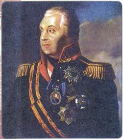
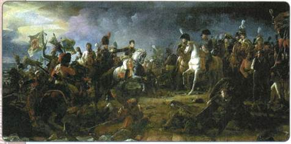
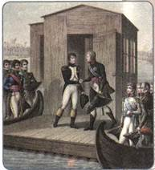
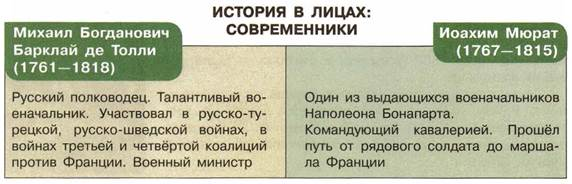

В чём состояли причины участия России в войнах, которые происходили в начале XIX в. в Европе?
1. Политика России па восточном направлении
Восточное направление традиционно было одним из наиболее важных во внешней политике Российской империи.
Россия постепенно продвигалась в Закавказье. В 1801—1803 гг. в её состав добровольно вошли несколько грузинских княжеств, и таким образом Восточная Грузия стала принадлежать России.
Стремление вернуть Восточную Грузию побудило персидского шаха начать войну с Россией. Армия шаха насчитывала 140 тыс. конных воинов и 60 тыс. пехотинцев, однако была плохо вооружена и оснащена. В ходе русско-иранской войны 1804—1813 гг. русские войска сумели покорить Гянджинское, Шекинское, Карабахское, Ширванское, Кубинское и Бакинское ханства. В 1810 г. Иран заключил союз с Турцией против России, который, однако, мало помог персам. В 1812 г. русские войска генерала П. С. Котляревского в составе 2 тыс. человек атаковали 10-тысячную армию во главе с наследным принцем Ирана Аббас-Мирзой и обратили её в бегство.
В 1813 г. был подписан Гюлистанский мирный договор. Иранский шах признал вхождение в состав Российской империи Восточной Грузии. Кроме того, Россия получала большую часть Азербайджана, западное побережье Каспийского моря, а также исключительное право держать военный флот на Каспии. Итогом войны стало серьёзное расширение и укрепление южных рубежей России.
В то время, когда российские войска противостояли Ирану, войну России объявила Турция. Так началась русско-турецкая война 1806—1812 гг. Под нажимом Наполеона, сулившего ему поддержку, турецкий султан стремился вернуть утраченные Крым и часть Грузии. Однако достичь своей цели султан не смог. В 1807 г. русские войска отразили наступление турок на Западном Кавказе и на Балканах. В этом же году русский флот под командованием адмирала Д. Н. Сенявина одержал крупные победы в Дарданелльском и Афонском морских сражениях, полностью разгромив турецкий флот. Результатом стало заключение Бухарестского мира 1812 г. и вхождение в состав России Бессарабии (земель между реками Днестр и Прут).
В этой войне с 1811 г. главнокомандующим русскими войсками был полководец М. И. Кутузов. Именно он сумел добиться решающего перелома военных действий в пользу России.

М. И. Кутузов
Михаил Илларионович Кутузов (1745—1813)
Великий полководец и выдающийся дипломат. Он окончил с отличием Дворянскую артиллерийскую школу и был приглашён в неё преподавателем математики. Во время русско-турецкой войны 1768—1774 гг. отличился в битвах при Рябой Могиле, Ларге и Кагуле, в бою под Алуштой (1774) был тяжело ранен в висок и правый глаз. В ходе русско-турецкой войны 1787—1791 гг. он участвовал во взятии Измаила.
А. В. Суворов высоко оценил действия своего ученика и сподвижника, сказав: «Он дрался на левом фланге, но был моей правой рукой». Свой талант дипломата М. И. Кутузов проявил в полной мере в 1792—1794 гг., когда возглавил русское посольство в Константинополе. Он сумел добиться политических и торговых преимуществ для России. Позже Кутузов был директором Сухопутного шляхетского корпуса (военного учебного заведения для дворян), командующим войсками в Финляндии, литовским и санкт-петербургским военным генерал-губернатором.
В 1805 г. Кутузов был назначен главнокомандующим русской армией в войне третьей коалиции против Наполеона. Однако в управление армией активно вмешивались русский и австрийский императоры. После Аустерлицкого поражения Кутузов был назначен в 1806 г. генерал-губернатором Киева.
2. Отношения России с Францией в 1801—1809 гг.
Взаимоотношения России со странами Европы были важным направлением внешней политики. В начале XIX в. усилилась Франция. Её правитель Наполеон Бонапарт, объявивший себя в 1804 г. императором, стремился к завоеваниям и уже покорил значительную часть Европы. Наиболее сильным противником Франции была Англия. Именно Англия организовала против Наполеона коалицию (союз) европейских государств.
Отец Александра I Павел I незадолго до смерти заключил союз с Наполеоном и прервал все отношения с Англией. В 1801 г., придя к власти, Александр I возобновил дипломатические отношения и торговлю с Англией. Он немедленно отозвал казачьи части, направленные Павлом I в поход на британские владения в Индии. Одновременно ухудшились отношения России с Францией. В 1805 г. Россия присоединилась к союзу европейских государств, боровшихся против Франции, — к третьей антифранцузской коалиции. Помимо России, в коалицию вошли Англия, Австрия и Швеция.
Из курса Новой истории вспомните, какова была международная роль Франции в начале XIX в. Каким политиком был возглавлявший Францию Наполеон Бонапарт? Назовите причины войн Франции с европейскими державами в конце XVIII—начале XIX в.

Битва при Аустерлице. Художник Ф. Жерар
Однако война эта не была удачной. Французы вначале разгромили австрийские войска под Ульмом и заняли Вену. Вскоре в сражении под Аустерлицем 20 ноября 1805 г. они нанесли поражение австро-русской армии. Это крупнейшее сражение назвали битвой трёх императоров, поскольку в армиях воюющих сторон лично присутствовали главы трёх стран: России (Александр I), Австрии (Франц II), Франции (Наполеон I). Союзная армия потеряла более 25 тыс. человек. Разгромленная Австрия подписала мир с Наполеоном, и третья коалиция распалась.
В 1806 г. была создана четвёртая антифранцузская коалиция в составе Англии, России, Пруссии и Швеции. Ответом Наполеона стало объявление в 1806 г. континентальной блокады Англии: стремясь изолировать Англию от остальных стран и тем самым подорвать британскую экономику, Наполеон установил запрет на торговлю с Англией.
Боевые действия коалиции против Наполеона были неудачными для неё и на этот раз. Сыграло свою роль и то, что Россия вела войну одновременно на трёх фронтах (воюя также с Ираном и Турцией). Пруссия оказалась неспособна противостоять французам. Русская армия под командованием Л. Л. Беннигсена в 1807 г. отразила удар французов под Прейсиш-Эйлау, однако в сражении под Фридландом она проиграла, и войска вынуждены были отступить. Франция, по существу, подошла к границам России. Александр I понимал, что военные и материальные ресурсы страны истощены. Он был вынужден пойти на мир с Наполеоном, который сам предложил начать переговоры.
Встреча императоров Александра I и Наполеона I проходила 25 июня 1807 г. на плоту на реке Неман в районе прусского города Тильзита. Она привела к заключению Тильзитского мира. Этот мирный договор укрепил господствующее положение Франции в Европе. Россия признавала все завоевания Наполеона. Она заключала с Францией союз и обязывалась вступить в войну с Англией в том случае, если та будет проводить прежний курс. Пока же Россия присоединялась к континентальной блокаде Великобритании. Пруссия фактически превращалась в зависимое от Франции государство. На территории населённых поляками областей Пруссии (а затем и Австрии) Наполеон создал герцогство Варшавское, полностью подчинённое ему.
Вспомните, какие страны участвовали в разделах Речи Посполитой. Чем эти разделы окончились?

Встреча Наполеона и Александра I в Тильзите
Последствия Тильзитского мира для России были неблагоприятными. Экономике из-за прекращения торговли с Англией был нанесён серьёзный урон, Россия оказалась в международной изоляции. Авторитет императора пошатнулся. Большинство членов Негласного комитета после 1807 г. вышли в отставку и даже выехали из России.
Однако прекращение войны в Европе дало возможность России завершить затянувшуюся борьбу на восточном направлении (с Турцией и Ираном), а секретные статьи договора предоставляли России свободу действий против Швеции.
3. Русско-шведская война 1808 —1809 гг. Вхождение Финляндии в состав России
Военные действия начались 9 февраля 1808 г. Русские войска в течение месяца овладели большей частью Финляндии и Аландскими островами. 16 марта 1808 г. император Александр объявил о присоединении Финляндии к России. В марте 1809 г. отряд под руководством генерала М. Б. Барклая де Толли совершил беспримерный переход по льду Балтийского моря и занял город Умео в Швеции, а отряд генерала П. И. Багратиона был направлен на Аландские острова для последующего наступления на Стокгольм.
Поражение Швеции привело к свержению шведского короля и просьбам о прекращении войны. Однако Александр не сразу пошёл на мир. Он созвал в городе Борго в Финляндии заседание сейма. Сейм объявил о присоединении Великого княжества Финляндского к России. Княжество получало широкие права самоуправления на основе законов, действовавших в этой стране при шведах.
Лишь после этого начались переговоры со Швецией. Согласно подписанному в 1809 г. мирному договору России передавалась вся территория Финляндии, Швеция присоединялась к континентальной блокаде Англии.
4. Россия накануне войны с Францией
Тильзитский мир был вынужденным и потому не мог быть прочным и долговечным. В 1809 г., во время новой франко-австрийской войны, Россия хотя и объявила войну Австрии, но активных действий против неё не предпринимала. Из-за участия России в континентальной блокаде резко сократился экспорт хлеба, снизился импорт товаров в Россию.
Образованное Наполеоном герцогство Варшавское стало источником проблем. Наполеон поддерживал у польских дворян реваншистские идеи (поляки мечтали о возвращении земель, перешедших к России по итогам разделов Речи Посполитой). Среди поляков, живших в западных областях России, распространялись и крепли антирусские настроения. Территорию герцогства Варшавского Наполеон использовал как плацдарм для подготовки наступления на Россию.
Наконец в феврале 1811 г. Наполеон нанёс ещё один удар по своему «дорогому союзнику» — присоединил к Франции герцогство Ольденбургское в Германии, наследный принц которого был женат на сестре Александра Екатерине. В апреле 1811 г. произошёл разрыв франко-русского союза. Началась усиленная подготовка обеих стран к неизбежной войне.

ПОДВЕДЁМ ИТОГИ
Начав своё царствование с решительных действий против наполеоновской Франции, император Александр I силой обстоятельств был поставлен перед необходимостью союза с ней. Тильзитский мир развязал руки обоим союзникам в новых территориальных приобретениях. А это, в свою очередь, неизбежно вело к обострению противоречий между ними. Война Франции с Россией становилась неизбежной.
Вопрросы и задания для работы с текстом параграфа
1. Перечислите основные события внешней политики России на восточном направлении. 2. Каковы были главные итоги русско-турецкой и русско-иранской войн? 3. Почему Россия вела войны против Франции в составе коалиций?
(При ответе на этот вопрос вспомните материалы, изученные вами в 8 классе.) Каковы результаты этих войн? 4. Оцените итоги русско-шведской войны 1808—1809 гг. 5. Дайте общую оценку Тильзитскому мирному договору. В чём вы видите его положительные последствия для России и в чём отрицательные?
Работаем с картой
1. Найдите и покажите на современной карте Европы географические пункты, о которых идёт речь в параграфе: Аустерлиц, Фридланд, Тильзит, Аландские острова, Борго, Бухарест. Какие из этих пунктов носят сейчас другие названия? Почему?
2. Покажите на карте территории, присоединённые к России в результате войн с Ираном, Турцией, Швецией.
Изучаем документ
ДОГОВОРА МЕЖДУ РОССИЕЙ И ШВЕЦИЕЙ 1809 г.
Его величество король шведский как за себя, так и за преемников его престола... отказывается неотменяемо и навсегда в пользу его величества Императора Всероссийского... от всех своих прав и притязаний на губернии... Кюмменегордскую, Нюландскую и Тавастгускую, Абовскую и Биернеборгскую с островами Аландскими, Саволакскую и Карельскую, Вазовскую, Улеаборгскую и часть западной Ботнии до реки Торнео. Море Аландское, залив Ботнический и реки Торнео и Муонио будут впредь служить границей между Империей Российской и Королевством Шведским.
Какие территории получила Россия по договору со Швецией?
Думаем, сравниваем, размышляем
1. Из курса Новой истории вспомните материал о причинах войн Франции с европейскими державами в конце XVIII—начале XIX в. Мог ли Наполеон I осуществить свои планы? 2. Некоторые современники считали заключение Александром I Тильзитского мира предательством интересов России и памяти русских воинов, погибших в сражениях с Францией. Согласны ли вы с этим? 3. Составьте в тетради хронологическую таблицу об участии России в антинаполеоновских войнах в 1805—1807 гг. 4. Используя дополнительные материалы, подготовьте сообщение о генерале П. С. Котляревском. 5. Найдите в Интернете оценки итогов присоединения Финляндии к России в 1809 г, высказываемые российскими и европейскими историками. Есть ли противоречия в этих оценках? Свои выводы обоснуйте.